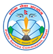

|
नेपा



परिचय
वि.सं. २००७ सालमा देशमा प्रजातन्त्रको स्थापनासँगै निजामती कर्मचारीको नियुक्ति छुट्टै र स्वतन्त्र निकायबाट गर्ने उद्देश्यले वि.सं. २००८
साल असार १ गते (तदनुसार १५ जुन १९५१ ई.स.) लोक सेवा आयोगको स्थापना भएको हो । स्थापना कालदेखि यस आयोगले निजामती सेवाका
पदमा उपयुक्त उम्मेदवार छनौट गर्ने कार्य गर्दै आइरहेको छ । नेपालको संविधानमा निजामती सेवा, नेपाली सेना, नेपाल प्रहरी, सशस्त्र प्रहरी बल,
नेपाल र अन्य संघीय सरकारी सेवाको पदमा पदपूर्तिका लागि लिइने लिखित परीक्षा लोक सेवा आयोगले सञ्चालन गर्ने गरी व्यवस्था गरिएको छ
। नेपालको संविधानको भाग २३ मा लोक सेवा आयोग सम्बन्धी व्यवस्था गरिएको छ ।
साल असार १ गते (तदनुसार १५ जुन १९५१ ई.स.) लोक सेवा आयोगको स्थापना भएको हो । स्थापना कालदेखि यस आयोगले निजामती सेवाका
पदमा उपयुक्त उम्मेदवार छनौट गर्ने कार्य गर्दै आइरहेको छ । नेपालको संविधानमा निजामती सेवा, नेपाली सेना, नेपाल प्रहरी, सशस्त्र प्रहरी बल,
नेपाल र अन्य संघीय सरकारी सेवाको पदमा पदपूर्तिका लागि लिइने लिखित परीक्षा लोक सेवा आयोगले सञ्चालन गर्ने गरी व्यवस्था गरिएको छ
। नेपालको संविधानको भाग २३ मा लोक सेवा आयोग सम्बन्धी व्यवस्था गरिएको छ ।
गठन
नेपालको संविधानको भाग २३ को धारा २४२ को उपधारा (१) मा भएको लोक सेवा आयोगको गठनसम्बन्धी व्यवस्था अनुसार आयोगमा
अध्यक्ष र अन्य चारजना सदस्यहरू रहने प्रावधान छ । राष्ट्रपतिले संवैधानिक परिषद्को सिफारिसमा लोक सेवा आयोगका अध्यक्ष र सदस्यको
नियुक्ति गर्ने र यसरी नियुक्ति गर्दा आयोगका सदस्यहरूमध्ये कम्तीमा पचास प्रतिशत सदस्य बीस वर्ष वा सो भन्दा बढी अवधिसम्म कुनै
सरकारी सेवामा रहेका व्यक्तिहरू मध्येबाट र बाँकी सदस्यहरू विज्ञान, प्रविधि, कला,
साहित्य, कानून, जनप्रशासन, समाजशास्त्र वा राष्ट्रिय जीवनका अन्य क्षेत्रमा शोध, अनुसन्धान,
अध्यापन वा अन्य कुनै महत्वपूर्ण कार्य गरी ख्याति प्राप्त गरेका व्यक्तिहरू मध्येबाट नियुक्त हुने व्यवस्था छ
। यसरी नियुक्ति हुनु अघि सङ्घीय संसदका दुबै सदनका सदस्यहरू रहने
गरी सङ्घीय कानून बमोजिम पन्ध्र सदस्यीय संयुक्त समिति मार्फत संसदीय सुनुवाई हुने प्रावधान छ ।
अध्यक्ष र अन्य चारजना सदस्यहरू रहने प्रावधान छ । राष्ट्रपतिले संवैधानिक परिषद्को सिफारिसमा लोक सेवा आयोगका अध्यक्ष र सदस्यको
नियुक्ति गर्ने र यसरी नियुक्ति गर्दा आयोगका सदस्यहरूमध्ये कम्तीमा पचास प्रतिशत सदस्य बीस वर्ष वा सो भन्दा बढी अवधिसम्म कुनै
सरकारी सेवामा रहेका व्यक्तिहरू मध्येबाट र बाँकी सदस्यहरू विज्ञान, प्रविधि, कला,
साहित्य, कानून, जनप्रशासन, समाजशास्त्र वा राष्ट्रिय जीवनका अन्य क्षेत्रमा शोध, अनुसन्धान,
अध्यापन वा अन्य कुनै महत्वपूर्ण कार्य गरी ख्याति प्राप्त गरेका व्यक्तिहरू मध्येबाट नियुक्त हुने व्यवस्था छ
। यसरी नियुक्ति हुनु अघि सङ्घीय संसदका दुबै सदनका सदस्यहरू रहने
गरी सङ्घीय कानून बमोजिम पन्ध्र सदस्यीय संयुक्त समिति मार्फत संसदीय सुनुवाई हुने प्रावधान छ ।
संविधानको प्रावधान अनुसार अध्यक्ष समेत गरी ५ जना मात्र पदाधिकारी रहने व्यवस्था भएकोमा यो संविधान लागू हुनुपूर्व आयोगमा
सो भन्दा बढी संख्यामा पदाधिकारीहरू कार्यरत रहेको हुँदा साबिकका सात जना पदाधिकारीहरूको नियुक्तिलाई नेपालको संविधानको धारा
३०१ को उपधारा (३) ले निरन्तरता दिने व्यवस्था गरेको छ ।
सो भन्दा बढी संख्यामा पदाधिकारीहरू कार्यरत रहेको हुँदा साबिकका सात जना पदाधिकारीहरूको नियुक्तिलाई नेपालको संविधानको धारा
३०१ को उपधारा (३) ले निरन्तरता दिने व्यवस्था गरेको छ ।
काम, कर्तव्य र अधिकार
निजामती सेवाको पदमा नियुक्तिका लागि उपयुक्त उम्मेदवार छनौट गर्न परीक्षा सञ्चालन गर्नु लोक सेवा आयोगको
कर्तव्य हुने व्यवस्था नेपालको संविधानको धारा २४३ मा गरिएको छ । उक्त धारामै “निजामती सेवाको पद”
भन्नाले सैनिक वा नेपाल प्रहरी वा सशस्त्र प्रहरी बल, नेपालको कर्मचारीको सेवाको पद तथा निजामती सेवाको पद होइन भनी ऐन,
बमोजिम तोकिएको अन्य सेवाको पद बाहेक नेपाल सरकारका अरु सबै सेवाको पद पर्ने व्यहोरा स्पष्ट पारिएको छ ।
कर्तव्य हुने व्यवस्था नेपालको संविधानको धारा २४३ मा गरिएको छ । उक्त धारामै “निजामती सेवाको पद”
भन्नाले सैनिक वा नेपाल प्रहरी वा सशस्त्र प्रहरी बल, नेपालको कर्मचारीको सेवाको पद तथा निजामती सेवाको पद होइन भनी ऐन,
बमोजिम तोकिएको अन्य सेवाको पद बाहेक नेपाल सरकारका अरु सबै सेवाको पद पर्ने व्यहोरा स्पष्ट पारिएको छ ।
त्यस्तै निजामती सेवाको पद बाहेक नेपाली सेना, नेपाल प्रहरी, सशस्त्र प्रहरी बल, नेपाल, अन्य सङ्घीय
सरकारी सेवा र संगठित संस्थाको पदमा पदपूर्तिका लागि लिइने लिखित परीक्षा सञ्चालन गर्ने जिम्मेवारी
लोक सेवा आयोगको हुने प्रावधान रहेको छ ।
सरकारी सेवा र संगठित संस्थाको पदमा पदपूर्तिका लागि लिइने लिखित परीक्षा सञ्चालन गर्ने जिम्मेवारी
लोक सेवा आयोगको हुने प्रावधान रहेको छ ।
उक्त कर्तव्य एवं जिम्मेवारीका अलावा निम्न विषयहरूमा लोक सेवा आयोगको परामर्श लिनुपर्ने व्यवस्था छः
1. नेपाली सेना, नेपाल प्रहरी, सशस्त्र प्रहरी बल, नेपाल र अन्य सङ्घीय सरकारी सेवाका पदमा बढुवा गर्दा
अपनाउनु पर्ने सामान्य सिद्धान्तको विषयमा;
अपनाउनु पर्ने सामान्य सिद्धान्तको विषयमा;
2. कुनै संगठित संस्थाको सेवाका कर्मचारीको सेवाका शर्तसम्बन्धी कानून र त्यस्तो सेवाका पदमा बढुवा र विभागीय कारबाही
गर्दा अपनाउनु पर्ने सामान्य सिद्धान्तको विषयमा;
गर्दा अपनाउनु पर्ने सामान्य सिद्धान्तको विषयमा;
3. सङ्घीय निजामती सेवाको शर्तसम्बन्धी कानूनको विषयमा;
4. सङ्घीय निजामती सेवा वा पदमा नियुक्ति, बढुवा र विभागीय कारबाही गर्दा अपनाउनु पर्ने सिद्धान्तको विषयमा;
5. सङ्घीय निजामती सेवाको पदमा छ महिनाभन्दा बढी समयका लागि नियुक्ति गर्दा उम्मेदवारको उपयुक्तताको विषयमा;
6. लोक सेवा आयोगको परामर्श लिनु नपर्ने अवस्थाको पदमा बहाल रहेको कर्मचारीलाई लोक सेवा
आयोगको परामर्श लिनु पर्ने अवस्थाको पदमा स्थायी सरुवा वा बढुवा गर्ने विषयमा; र
आयोगको परामर्श लिनु पर्ने अवस्थाको पदमा स्थायी सरुवा वा बढुवा गर्ने विषयमा; र
7. सङ्घीय निजामती सेवाको कर्मचारीलाई दिइने विभागीय सजायको विषयमा ।
उम्मेदवार छनौट प्रक्रिया
लोक सेवा आयोग ऐन, २०६६ अनुसार आयोगले देहायको कुनै एक वा एकभन्दा बढी तरीकाद्बारा उपयुक्त उम्मेदवार छनौट गर्नेछ ः
क) लिखित परीक्षा,
ख) प्रयोगात्मक परीक्षा,
ग) अन्तर्वार्ता र
घ) आयोगले तोकेका अन्य तरीकाहरु ।
उम्मेदवार छनौट प्रक्रियाको लागि आयोगले बार्षिक कार्यतालिका तयार गर्दछ । जसमा रिक्त पदहरुको प्रतिशत
निर्धारण देखि विभिन्न चरणमा हुने छनौट प्रकृयाहरुको बिवरण समेत उल्लेख हुन्छ ।
निर्धारण देखि विभिन्न चरणमा हुने छनौट प्रकृयाहरुको बिवरण समेत उल्लेख हुन्छ ।
सम्बन्धित निकायवाट रिक्त पद पूर्ति गर्न माग प्राप्त भए पछि लोक सेवा आयोगले सम्वन्धित ऐन नियम अनुसार पद पूर्तिको
लागि पदसंख्या निर्धारण गर्ने गर्दछ । यसरी पदसंख्या निर्धारण भैसकेपछि आयोगको वेवसाइट साप्ताहिक रुपमा प्रत्येक बुधवार प्रकाशित हुने बुलेटिन र
गोरखापत्र राष्ट्रिय दैनिकमा विज्ञापन प्रकाशन गर्ने गर्दछ
। विज्ञापन गर्दा खुलातर्फ आन्तरिक प्रतियोगितात्मक परीक्षा हुनेतर्फ २१ दिन र दोव्वर दस्तुरी तिरी थप ७ दिनको म्याद दिई दरखास्त आव्हान गरिन्छ ।
खुला तथा आन्तरिक प्रतियोगितात्मक परीक्षाको लागि विज्ञापन प्रकाशित भैसकेपछि आयोगका क्षेत्रीय निर्देशनालय,
अञ्चल कार्यालय र दरखास्त व्यवस्थापन केन्द्रबाट विज्ञापित पदको अनलाइन दरखास्त संकलन गरिन्छ ।
विज्ञापित पदका लागि प्राप्त भएका दरखास्त उपर छानविन गरी परीक्षार्थीलाई परीक्षामा सामेल हुन पाउने प्रवेश पत्र जारी गरीन्छ ।
लागि पदसंख्या निर्धारण गर्ने गर्दछ । यसरी पदसंख्या निर्धारण भैसकेपछि आयोगको वेवसाइट साप्ताहिक रुपमा प्रत्येक बुधवार प्रकाशित हुने बुलेटिन र
गोरखापत्र राष्ट्रिय दैनिकमा विज्ञापन प्रकाशन गर्ने गर्दछ
। विज्ञापन गर्दा खुलातर्फ आन्तरिक प्रतियोगितात्मक परीक्षा हुनेतर्फ २१ दिन र दोव्वर दस्तुरी तिरी थप ७ दिनको म्याद दिई दरखास्त आव्हान गरिन्छ ।
खुला तथा आन्तरिक प्रतियोगितात्मक परीक्षाको लागि विज्ञापन प्रकाशित भैसकेपछि आयोगका क्षेत्रीय निर्देशनालय,
अञ्चल कार्यालय र दरखास्त व्यवस्थापन केन्द्रबाट विज्ञापित पदको अनलाइन दरखास्त संकलन गरिन्छ ।
विज्ञापित पदका लागि प्राप्त भएका दरखास्त उपर छानविन गरी परीक्षार्थीलाई परीक्षामा सामेल हुन पाउने प्रवेश पत्र जारी गरीन्छ ।
छनौट प्रक्रियामा निष्पक्षता र शुद्धता कायम गर्नको लागि आयोगले प्रश्नपत्र निर्माण, प्रश्नपत्र परिमार्जन, उत्तरपुस्तिका परीक्षण,
अन्तर्वार्ता संचालन तथा लिखित परीक्षा र अन्तर्वार्तामा संलग्न पदाधिकारीलाई एक अर्काको काम कारवाहीका बिषय थाहा पाउन नसक्ने प्रणाली
अवलम्वन गरी तटस्थ राख्ने नीति अख्तियार गरेको छ ।
अन्तर्वार्ता संचालन तथा लिखित परीक्षा र अन्तर्वार्तामा संलग्न पदाधिकारीलाई एक अर्काको काम कारवाहीका बिषय थाहा पाउन नसक्ने प्रणाली
अवलम्वन गरी तटस्थ राख्ने नीति अख्तियार गरेको छ ।
सुरक्षा निकायहरु तथा अन्य सरकारी सेवा/संगठित संस्थाहरुको हकमा प्रतिशत निर्धारण देखि लिखित परीक्षा सञ्चालन गर्ने
सम्मको कार्यहरु माथि उल्लेखित प्रक्रियाहरु अनुरुप सम्पन्न गर्ने गरिन्छ ।
सम्मको कार्यहरु माथि उल्लेखित प्रक्रियाहरु अनुरुप सम्पन्न गर्ने गरिन्छ ।
अपडेट
नेपाल राष्ट्र बैंकको वि.नं. १२/२०८१ (खुला तथा समावेशी), अधिकृत तृतीय श्रेणी, सहायक निर्देशक पदको पुनर्योग सम्वन्धी सूचना>
लोक सेवा आयोग, दाङ कार्यालयको विज्ञापन नं. १४४०५/०७९-०८०(मधेशी), नेपाल प्रशासन सेवा, सामान्य प्रशासन समूह, रा.प. अनं. द्वितीय श्रेणी (अप्राविधिक), खरिदार वा सो सरह पदको वैकल्पिक उम्मेदवार सिफारिस गरिएको सूचना ।
सामाजिक सूरक्षा कोषको कार्यक्षमता मूल्याङ्कन बढुवा, आन्तरिक प्रतियोगिता र खुला तथा समावेशी विज्ञापन सम्बन्धी सूचना (२०८१/९/१२)
नेपाल नोटरी पब्लिक परिषद्को कार्यक्षमता मूल्याङ्कन बढुवा र खुला तर्फको विज्ञापन सम्बन्धी सूचना (२०८१/९/१२) ८१/०९/१२
ठेगाना
लोक सेवा आयोग
केन्द्रीय कार्यालय,
कमलपोखरी, काठमाडौं, नेपाल
फोन न ०१-४७७१४९४, ०१-४७७१४९८
फ्याक्स : ०१-४७७१४९०
पोष्ट वक्स : ८९७९
E-mail : info@psc.gov.np